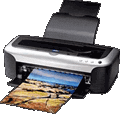

| surveillance |
| home page |
|  |
|
The following map leads you to all of the available information. . Some projections suggest that digital cameras will become as popular as film-based cameras by 2005. In this edition of HowStuffWorks, you will learn how a digital camera converts light into an image that can be stored on a computer or printed out on a desktop printer. You may want to start with "How It Works" to learn the basics of how a digital camera works -- it's an amazing system. |